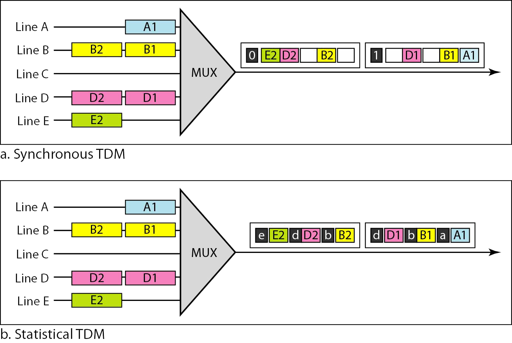

Definición
En TDM síncrona, cada entrada tiene una ranura reservada en la trama de salida. Eso puede ser ineficiente si algunas líneas de entrada no tienen datos que enviar. En la multiplexación estadística por división del tiempo, las ranuras se asignan dinámicamente para mejorar la eficiencia del ancho de banda. Sólo cuando una línea de entrada tiene datos que enviar obtiene una ranura en la trama de salida. En la multiplexación estadística, el número de ranuras en cada trama es menor que el número de líneas de entrada. El multiplexor comprueba cada línea de entrada de forma cíclica; asigna una ranura para una línea de entrada si la línea tiene datos para enviar; en caso contrario se salta la línea y comprueba la siguiente línea.
Ejemplo
La siguiente imagen muestra un ejemplo de multiplexación TDM síncrona y estadística. En el primer caso, algunas ranuras están vacías debido a que la línea correspondiente no tiene datos para enviar. En el segundo caso, sin embargo, no hay ranuras vacías siempre que haya datos a enviar por cualquiera de las líneas de entrada.
Figura 19. Comparación de las ranuras en TDM.
